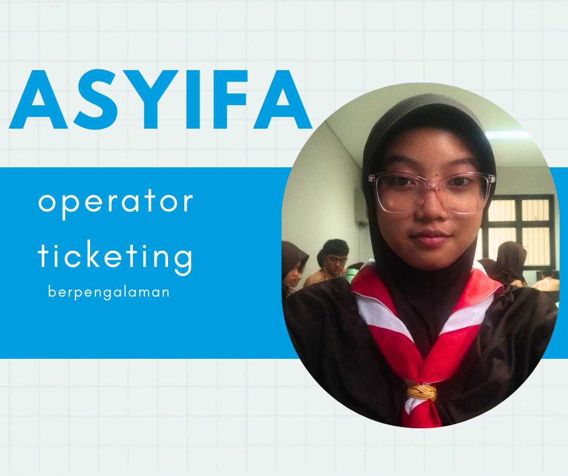
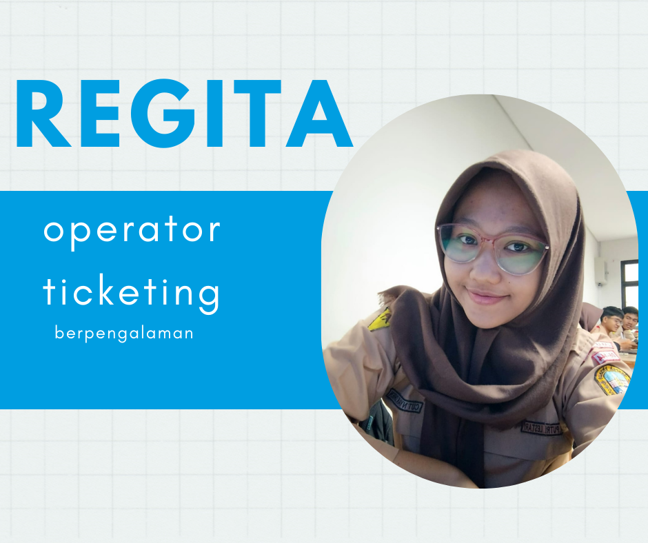
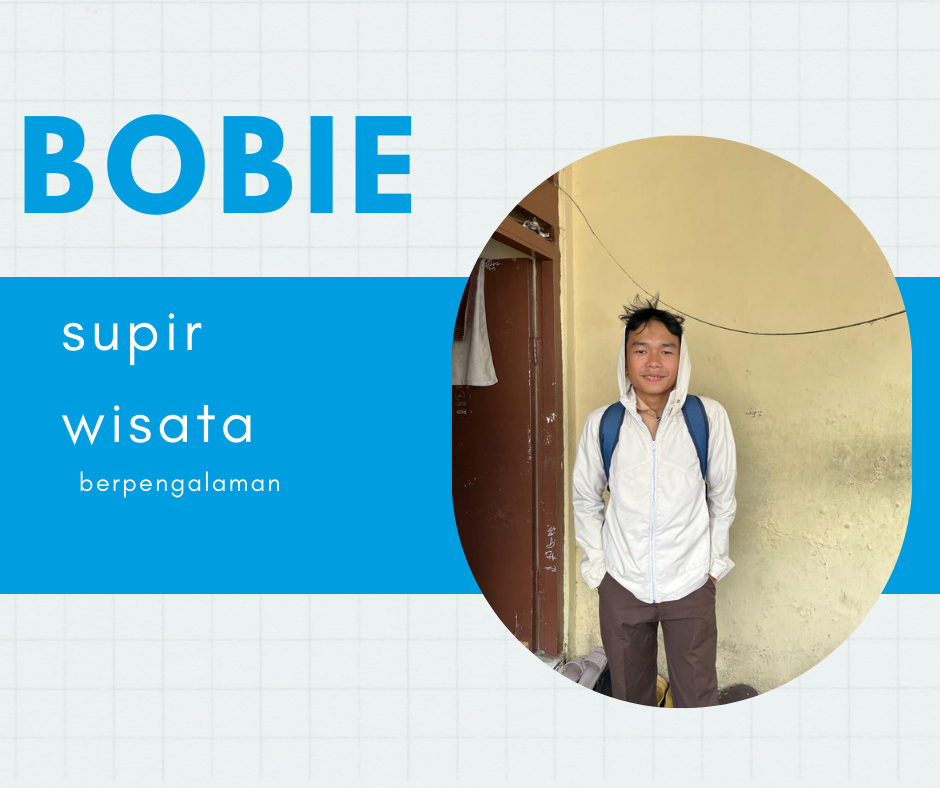

Pangkal Pinang, ibu kota Provinsi Kepulauan Bangka Belitung, adalah kota yang kaya akan sejarah, budaya, dan keindahan alam. Kota ini terkenal dengan pertambangan timahnya yang pernah menjadi tulang punggung perekonomian Indonesia. Namun, seiring berjalannya waktu, Pangkal Pinang telah bertransformasi menjadi kota modern dengan berbagai daya tarik wisata
Pangkal Pinang memiliki sejarah panjang yang terkait erat dengan pertambangan timah. Kota ini didirikan pada abad ke-18 sebagai pusat aktivitas pertambangan timah. Sejak saat itu, Pangkal Pinang terus berkembang dan menjadi pusat pemerintahan dan perdagangan di Pulau Bangka.
pangkal pinang
Budaya bangka balitung
Tradisi Bangka Belitung sangat beragam, unik, menarik, dan penuh makna. Tradisi tersebut masih ada dan lestari sampai sekarang. Berbagai tradisi di Bangka Belitung merupakan simbol kebersamaan serta mempererat tali persaudaraan antarmasyarakat.
diselenggarakan setiap masuk Tahun Baru Islam atau 1 Muharram. Penduduk setempat akan berbondong-bondong menuju ke pantai. Tradisi ini bertujuan untuk menolak bala
Tradisi tahunan yang diselenggarakan oleh Suku Sekak. Masyarakat setempat percaya, bahwa upacara Buang Jung ini dapat memberikan keselamatan kepada para nelayan saat mencari hasil tangkapan di laut.
Baju atasan khas Bangka Belitung yang terbuat dari bahan sutera. Baju Seting ini berbentuk baju kurung yang dihias manik-manik berwarna kuning keemasan.
Kain tenun seperti songket dengan warna cerah dan menyala khas kain tradisional Melayu yang memiliki lebih banyak lengkungan serta selalu dihiasi motif flora dan fauna.
Terbuat dari tepung terigu, gula aren, serta santan. Terdapat isian nanas yang masih agak berserat. camilan bertekstur yang padat dengan warna kecokelatan. Menawarkan rasa manis berpadu dengan sedikit asam dari nanas
Popular Packeges
Tempat wisata
Kepulauan Bangka Belitung adalah sebuah provinsi di Indonesia yang terdiri dari dua pulau utama yaitu Pulau Bangka dan Pulau Belitung serta ratusan pulau-pulau kecil, total pulau yang telah bernama berjumlah 470 pulau dan yang berpenghuni hanya 50 pulau
DANAU KAOLIN
Wisata yang unik dengan airnya yang berwarna biru kehijauan, yang berasal dari tingginya kandungan mineral kaolin di dasar danau. Selain keunikan warna airnya, Danau Kaolin juga memiliki daya tarik lain yang menarik perhatian.
7D/6N
pax: 10
Kota Tanjung Pandan
(25 reviews)
Rp 20.000
/ per person
bangka botanica
menikmati suasana damai nan sejuk, sekaligus belajar tentang usaha pertanian, peternakan, dan perikanan terpadu secara organik yang sudah berjalan dengan baik ditempat ini. Apalagi letaknya cukup strategis, bersebelahan dengan pantai Pasir Padi, dan mudah dijangkau dari pusat kota Pangkalpinang.
7D/6N
pax: 10
Tembereng
(20 reviews)
Rp 10.000
/ per person
Pantai pasir padi
struktur pantainya yang landai, kontur pasir yang padat sehingga pantai ini nyaman untuk dilalui dengan jalan kaki bahkan dapat dilalui oleh kendaraan bermotor baik roda dua, roda empat bahkan truk jenis tronton.
7D/6N
pax: 10
Temberan
(40 reviews)
Rp 15.000
/ per person
Petugas wisata
A . B . R



Call To Action
Jangan lewatkan kesempatan untuk menikmati keindahan alam Bangka Belitung yang spektakuler